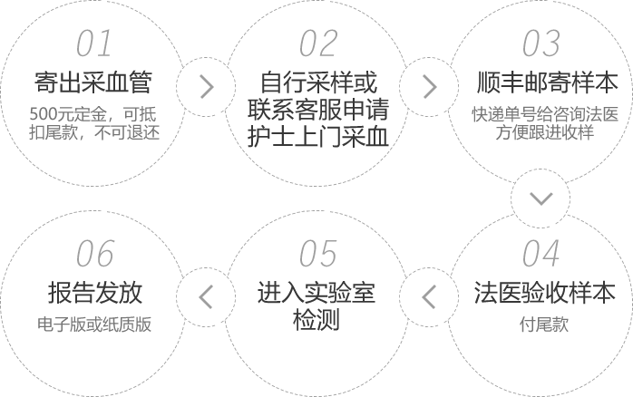

办理流程

无创胎儿亲子鉴定，是利用最新二代DNA测序技术对母体外周血中的游离DNA片段进行测序，从中获得胎儿的遗传信息与疑似父亲生物信息进行分析、对比，从而确定亲子关系。
与传统胎儿鉴定相比，无创胎儿亲子鉴定只需孕妇静脉血10ml，不需要做穿刺手术抽取羊水或绒毛，不需到指定医院采样，甚至不用到我们鉴定中心便可完成检测，我们提供专业护士的上门服务，支持受理全国样本邮寄，并且全面保障您的个人隐私，隐私更加安全可靠。
办理流程
常见问题
孕妇产前做亲子鉴定是否影响胎儿发育？
绒毛亲子鉴定有千分之三的流产率，孕周数越高越不建议做绒毛鉴定； 羊水亲子鉴定技术发展至今已有30年，安全性已经得到医学界的认可； 无创亲子鉴定仅抽取10ml孕妇静脉血，采用13000个检测位点，绝对安全、便捷、精准，对孕妇和胎儿没有任何影响。
男方可以检测样本有哪些？
男方（疑父）可以采集血痕、毛发、指甲、口腔粘膜、静脉血2-5ml、纯精斑、口香糖、烟蒂等作为检测样本。 女方只需10ML静脉血。
无创亲子鉴定和普通的产前鉴定有何区别？
无创亲子鉴定和普通产前鉴定都是对腹中胎儿的DNA进行检测，不同的是胎儿DNA的提取途径、适用的孕期以及鉴定费用。无创鉴定仅采取孕妇静脉血，安全快捷，普通产前鉴定则需在指定孕期内抽取羊水或绒毛，但是鉴定结果的准确性是一致的。
无创亲子鉴定一般多久出具鉴定结果？
胎儿鉴定是做13000个位点，5-7个工作日出具鉴定结果；
以上为鉴定服务流程指引，详细办理说明及注意事项请联系专业法医。确定好办理时间，请提前一天电话或微信预约。
电话：400-881-5310 微信：18916473279
咨询时间：24h全天候服务（节假日无休）
特别说明
1、孕妇接受过异体输血、移植手术、干细胞治疗、免疫治疗或患有肿瘤疾病、先兆子痫、接受过胎减手术的不适合做无创胎儿鉴定。
2、异卵双胞胎需提供所有男士样本，代孕情况需向客服说明。
3、请按要求采样，如样本不合格（量少、被污染等）需二次采样。
4、怀孕从第5周开始，母亲外周血中含有胎儿游离DNA，但因个体差异浓度不同，最早受理时间建议最好6周+。
5、您对样本的真实性负责，我们对检测结果的准确性负责。
您刚好需要，而我刚好专业
版权所有 © 鼎力司法鉴定中心
http://www.dlsfjd.com 闽ICP备16027704号